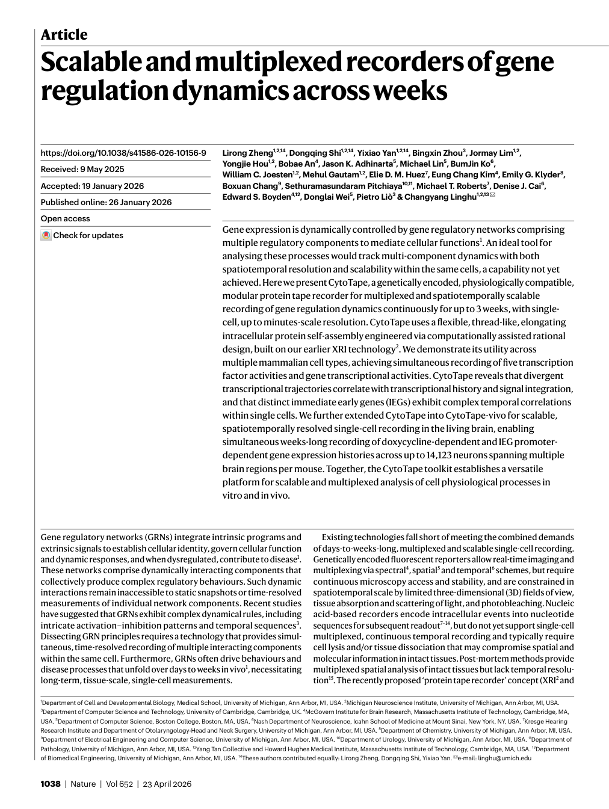
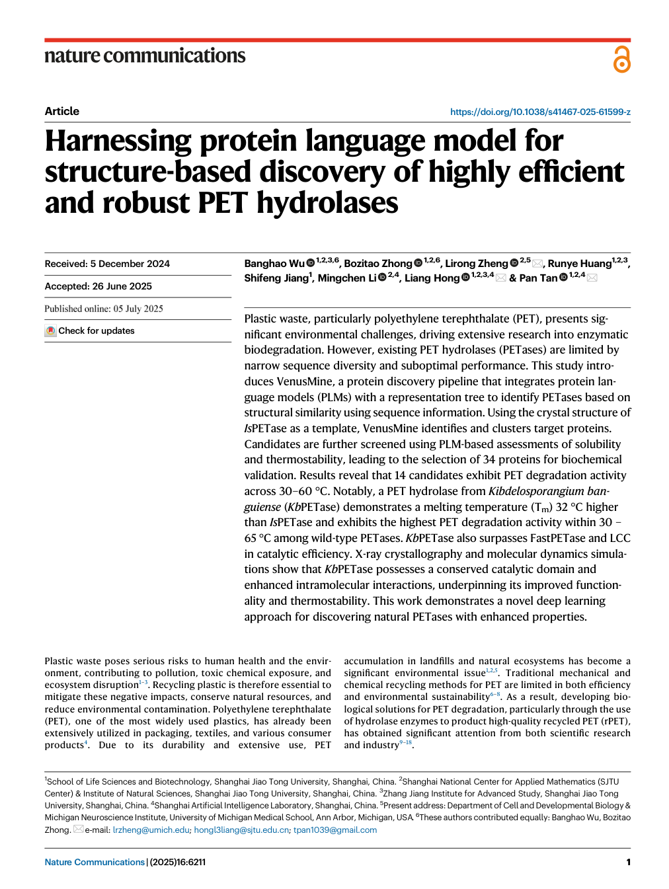
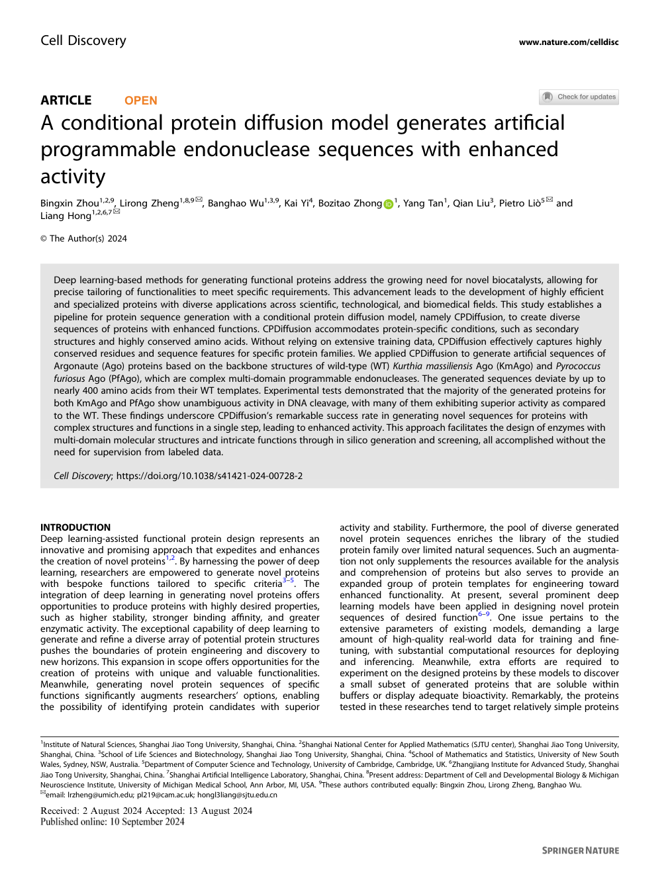
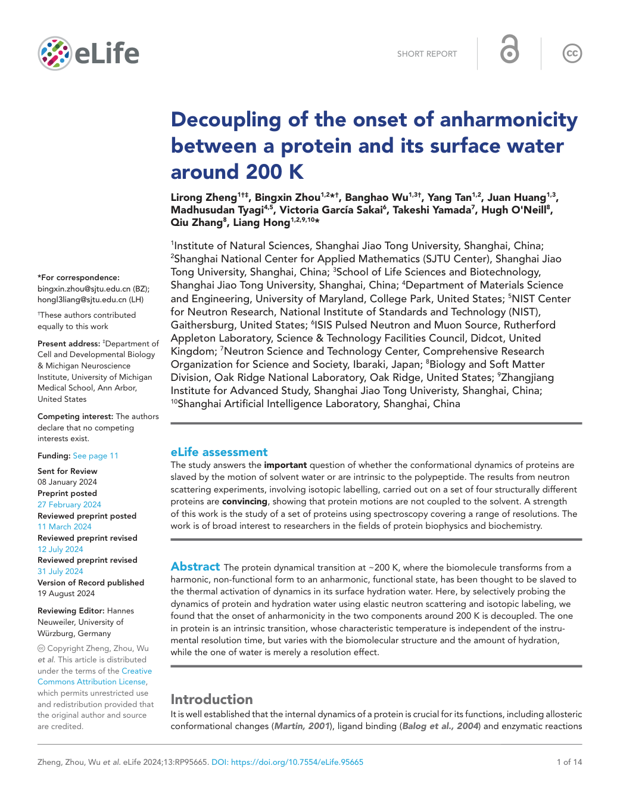
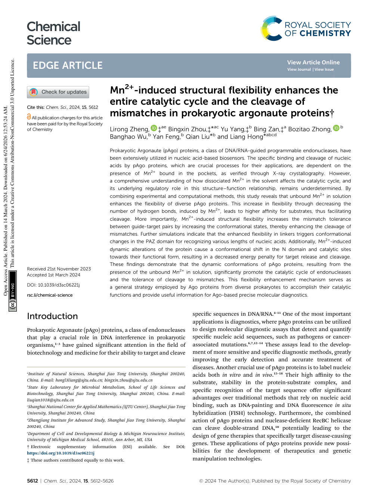
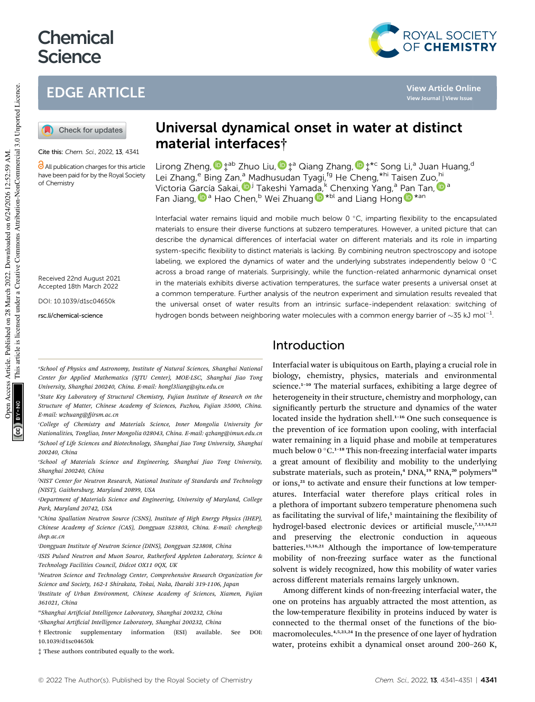
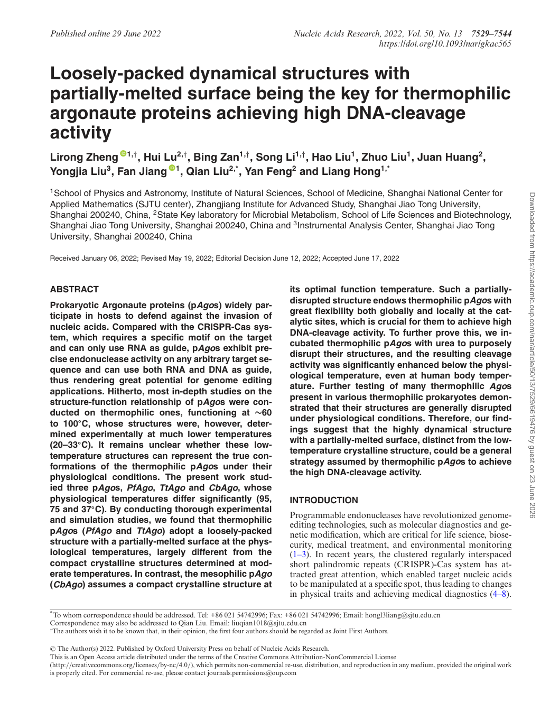
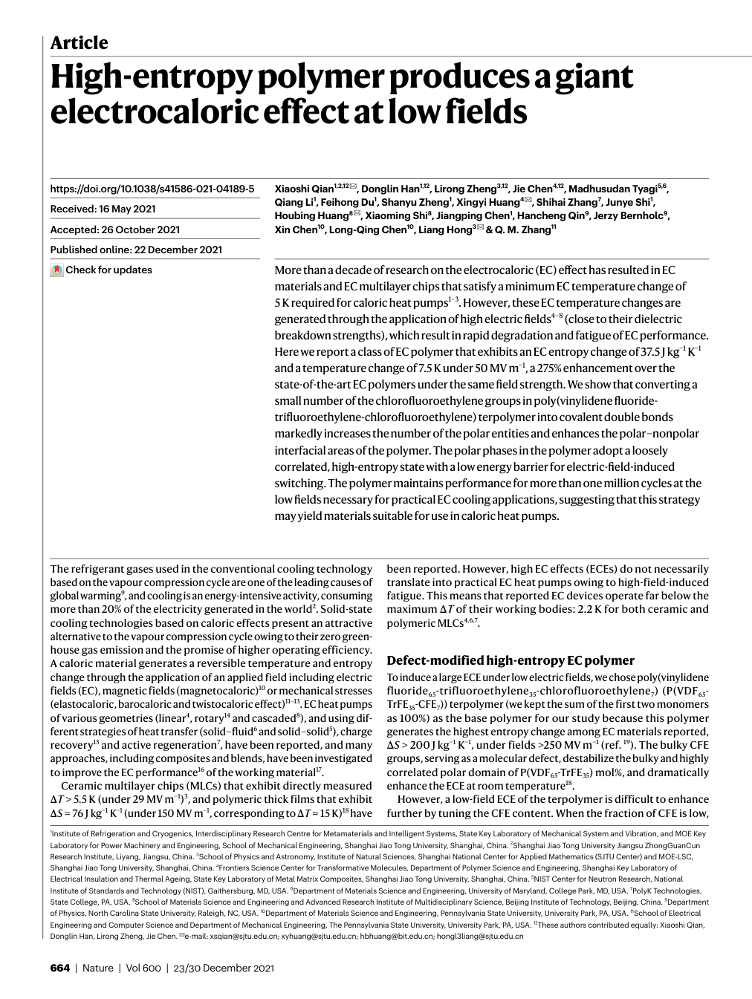
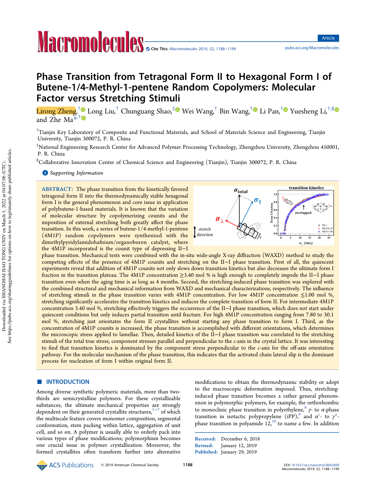
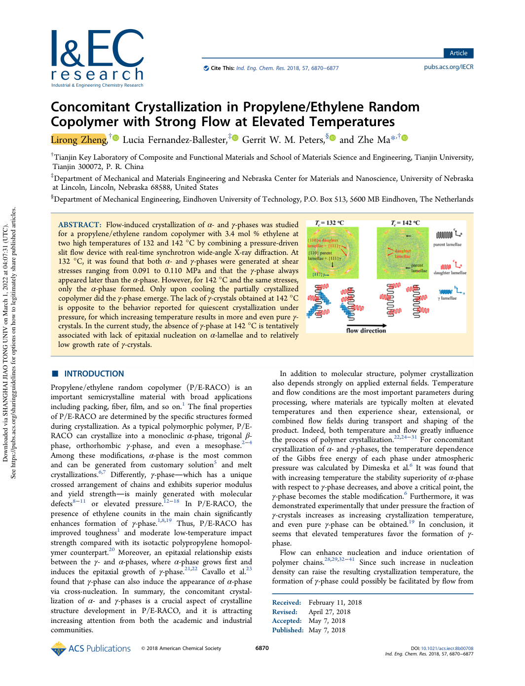

Paper Gallery
Selected visual highlights from representative papers. Click each card to open the DOI.

Scalable and Multiplexed Recorders of Gene Regulation Dynamics Across Weeks
CytoTape enables multiplexed, long-term recording of gene regulation dynamics across weeks.

Harnessing Protein Language Model for Structure-Based Discovery of PET Hydrolases
VenusMine integrates protein language models with structural search to discover robust PET hydrolases.

A Conditional Protein Diffusion Model Generates Artificial Programmable Endonuclease Sequences
CPDiffusion generates artificial programmable endonuclease sequences with enhanced activity.

Decoupling of the Onset of Anharmonicity Between a Protein and Its Surface Water
Neutron scattering reveals decoupled dynamics between proteins and hydration water around 200 K.

Mn²⁺-Induced Structural Flexibility Enhances Argonaute Catalysis
Mn²⁺-induced flexibility promotes the catalytic cycle and mismatch tolerance of prokaryotic Argonaute proteins.

Universal Dynamical Onset in Water at Distinct Material Interfaces
Interfacial water exhibits a universal dynamical onset across distinct material interfaces.

Loosely-Packed Dynamical Structures of Thermophilic Argonaute Proteins
Thermophilic Argonaute proteins use dynamic, partially melted surfaces to achieve high DNA-cleavage activity.

High-Entropy Polymer Produces a Giant Electrocaloric Effect at Low Fields
A high-entropy electrocaloric polymer produces large cooling effects at low electric fields.

Phase Transition from Tetragonal Form II to Hexagonal Form I of Butene-1/4-Methyl-1-pentene Random Copolymers
Polymer phase transition controlled by molecular factors and stretching stimuli.

Concomitant Crystallization in Propylene/Ethylene Random Copolymer with Strong Flow at Elevated Temperatures
Flow-induced crystallization of α- and γ-phases in propylene/ethylene random copolymers.